Learning Goals
At the end of this Tutorial, you will be able to:
- Create and use classes in HTML.
- Create and use custom properties in HTML and TailwindCSS.
About classes and class names
In the sample file page-3.html, you created a web page with a <main> container block and inside that six <section> containers.
You will now assign different text and background colours to the content inside these various <section> elements.
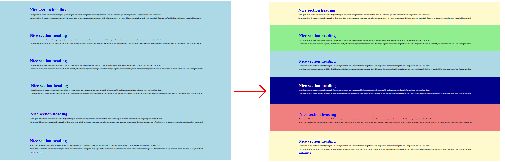
To assign different colours (or other styles) to the content with the same tag (such as <section>), you can use what are called classes of that tag.
You can think of classes as a version of an HTML tag.
In an HTML file, you assign a class to a <section> or other tag by giving it a class name. Below you can see some examples of class names assigned to opening <section> tags.
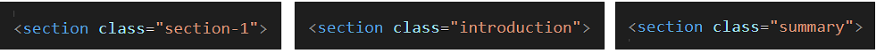
Here are the rules about class names:
- Class names are entered within a pair of double quotes ("").
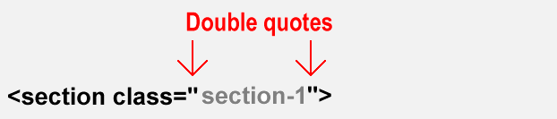
- Class names cannot have a space within them. You can type the hyphen (-) character to join words.
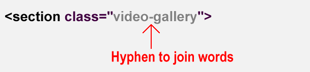
- An element can have more than one class name assigned to it. Separate the different class names with a single space.
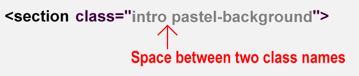
- If an element has more than one class name, the order of the names is not important.
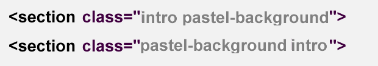
In the <head> of your web page, you add classes to an HTML element in the same way as you would any other CSS selector – but you must begin the selector name with a full stop (.). See the examples below.
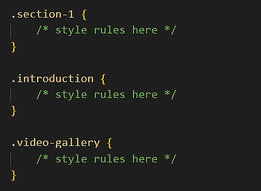
Adding colours to your page-3.html web page
Follow the steps below:
- In VS Code, open your page-3.html web age.
- Add the following class names to the six <section> containers, and save the file.
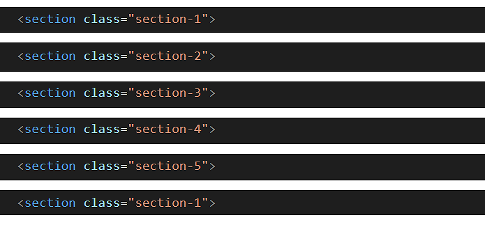
Note that you can apply the same class name to multiple elements in a web page. In this example, both the first and last <section> have the same class name. - In the <head> of your web page, create the following CSS class selectors, apply a different background colour value to each one, and save the file. See the example below.
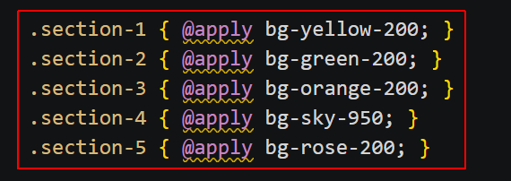
- If you have applied a dark background colour to any <section>, update the relevant text colours to white to make the text readable. See the example below.
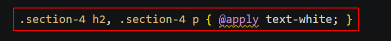
Your final web page should look similar to that below.
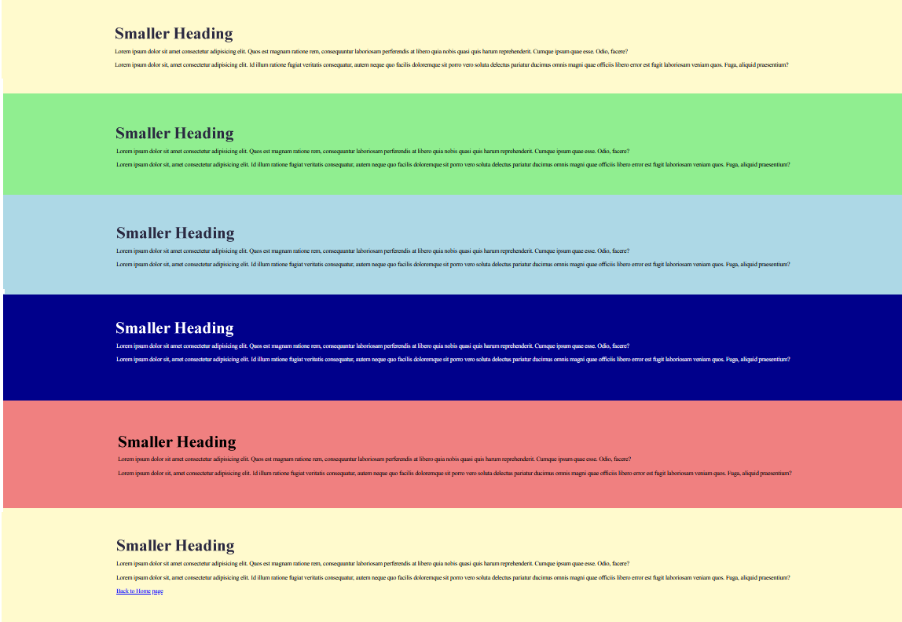
Whatever colours you choose, ensure that the text in each of the six sections is readable against the background. See Colour contrast and accessibility.